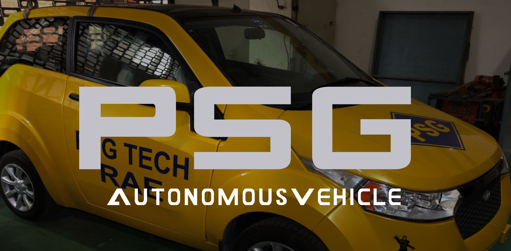

Sep 2019 - May 2020:
I worked on a Self-Driving Car team project based on Mahindra Tech's E2o vehicle for autonomous driving. My primary contribution was integrating a conventional machine vision approach to aid in detecting lanes during driving. Additionally, I implemented this approach to detect lanes and signs to integrate it with a machine learning-based approach using Kalman filters.
More details about this project can be found on the link below: